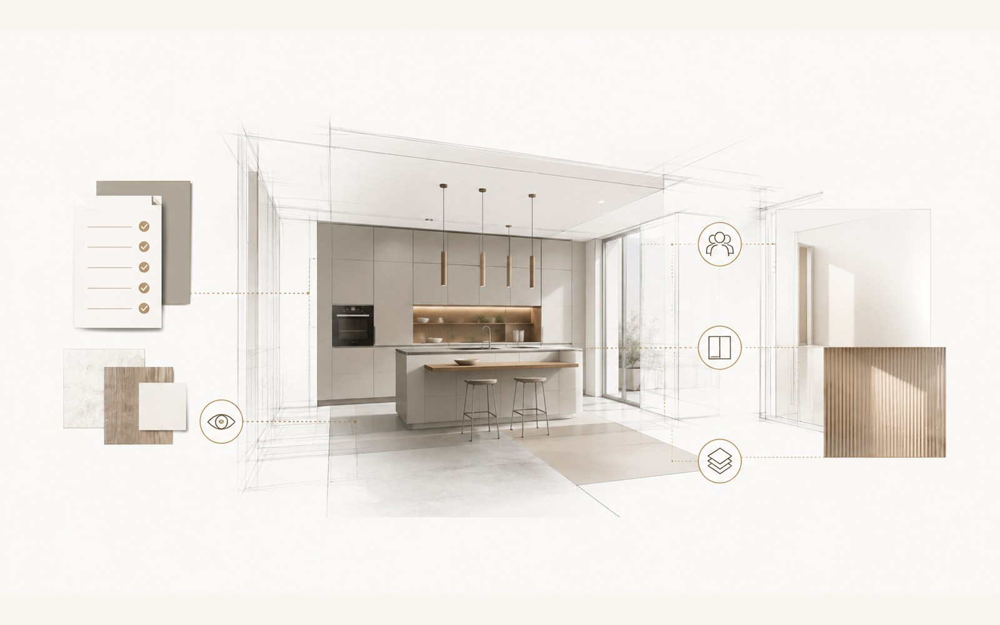

Direzione funzionale
Esigenze, priorità, rapporti tra funzioni e proposta preliminare motivata.
Esempio illustrativo · Sviluppo avanzato
Questa pagina mostra la funzione del fascicolo più articolato ottenibile aggiungendo Sviluppo avanzato al progetto base. Non rappresenta un progetto reale, non espone procedure interne e non sostituisce il progetto definitivo del rivenditore.

Output più articolato
Sviluppo avanzato parte dalla stessa base di Progetto Cucina 90G e aggiunge maggiore definizione, una revisione e una restituzione più strutturata.
Esigenze, priorità, rapporti tra funzioni e proposta preliminare motivata.
Elaborati e visualizzazioni aggiuntive per rendere più leggibile la soluzione principale e la direzione scelta.
Una revisione nel perimetro previsto, insieme ai punti che devono essere controllati nella fase reale di fornitura.
Limite essenziale
Non certifica misure, impianti, fattibilità, disponibilità, codici, prezzi o condizioni commerciali. Il rivenditore ricostruisce e verifica la soluzione nel proprio sistema.
Progetto Cucina 90G · 145 € deve essere utile da solo e definisce la soluzione principale. Sviluppo avanzato · +117 € porta più avanti lo stesso progetto quando una revisione, più visualizzazioni e un fascicolo conclusivo aggiungono valore reale.
Procedure operative, criteri decisionali interni, sequenze di controllo e strumenti utilizzati per produrre l'analisi non vengono pubblicati.
Prima di scegliere l'approfondimento
Non devi deciderlo da solo. Sottoponi gratuitamente il caso: verifichiamo se basta il Progetto Cucina 90G base oppure se l'add-on aggiunge valore reale, con contenuti e prezzo chiari prima di iniziare.